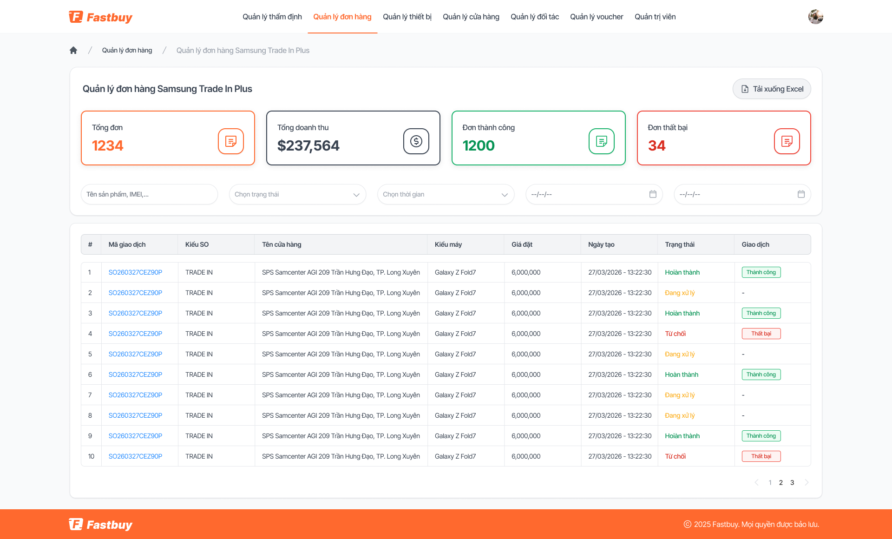
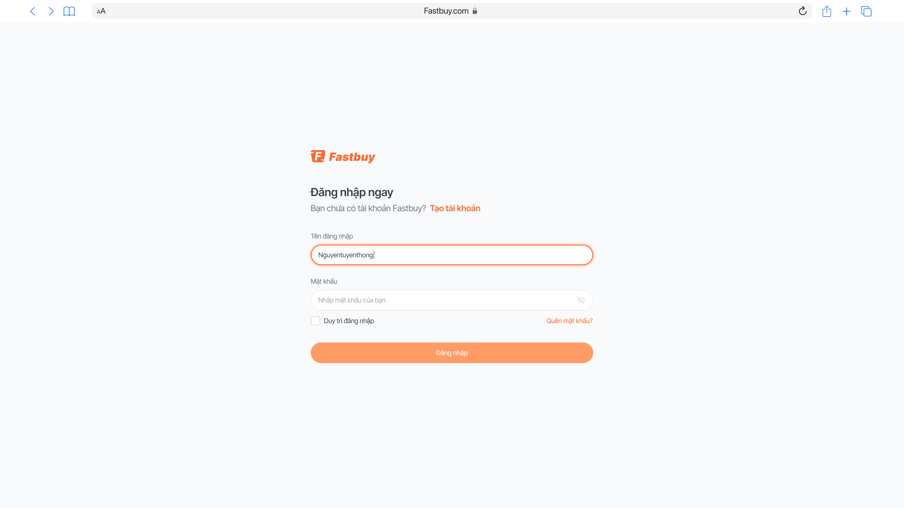
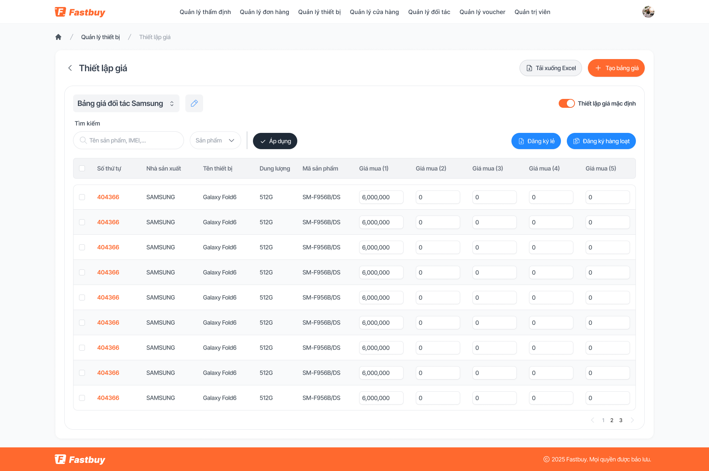
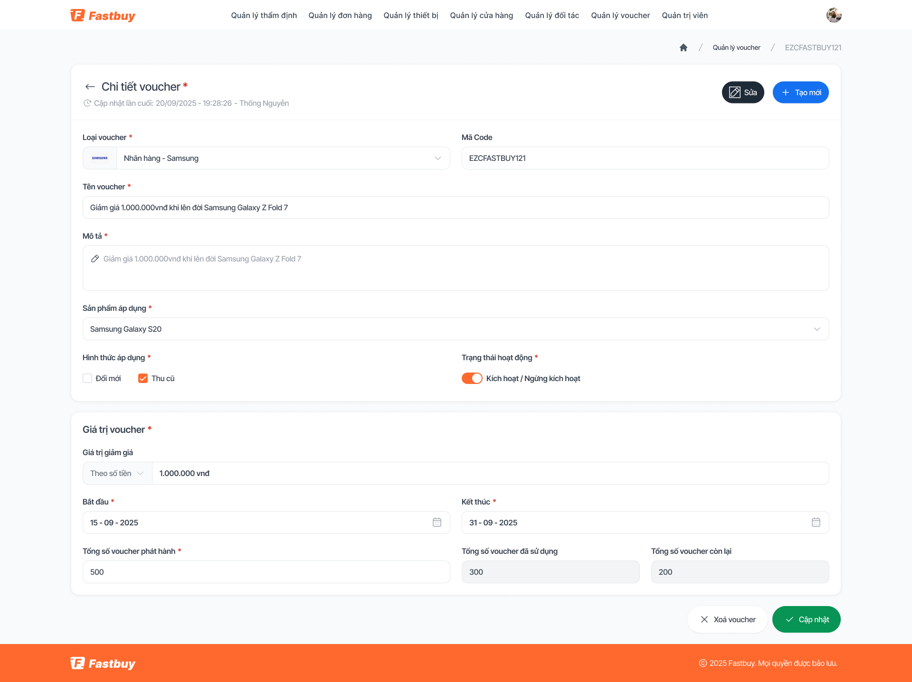
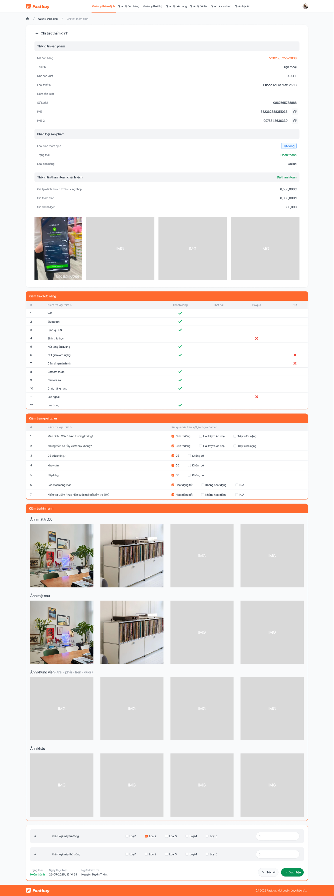

Fastbuy là hệ sinh thái thu cũ đổi mới (trade-in) thiết bị — vận hành toàn bộ vòng đời từ thẩm định máy cũ, định giá, tạo đơn, đến quản trị đối tác và chương trình Samsung Trade In Plus. Đây là một sản phẩm B2B lớn, nhiều vai trò và nhiều module nghiệp vụ kết nối với nhau, nên thử thách chính không nằm ở một màn hình đẹp, mà ở việc giữ cho cả hệ thống nhất quán và dễ mở rộng khi số lượng màn hình tăng nhanh.
Mình tham gia với vai trò thiết kế giao diện và chuẩn hoá hệ thống component — đảm bảo ~10 module tuy khác nghiệp vụ nhưng vẫn nói cùng một “ngôn ngữ thị giác”: cùng bảng dữ liệu, cùng thẻ số liệu, cùng badge trạng thái, cùng bố cục màn chi tiết.
02
Bối cảnh & người dùng
Fastbuy không phải một màn hình — nó là một hệ thống vận hành chạy mỗi ngày ở cửa hàng và ở bộ phận đối soát. Khi sản phẩm phình ra ~10 module với hàng trăm màn, thử thách lớn nhất không phải “màn này đẹp không” mà là “cả hệ thống có còn nói cùng một thứ tiếng không”. Đó là nơi một design system tốt tạo ra khác biệt.
Hành trình một đơn trade-in
Một đơn đi qua nhiều module nối tiếp. Việc của thiết kế là làm cho các chặng này nối nhau mượt mà — cùng pattern, cùng cách đọc trạng thái — dù mỗi chặng là một nghiệp vụ riêng.
Đăng nhập & phân quyền
Nhân viên vào hệ thống qua luồng xác thực (đăng nhập, OTP, quên mật khẩu) và thấy đúng module theo vai trò.
Thẩm định máy cũ
Nhập IMEI, chấm checklist tình trạng, đính kèm ảnh/video — màn chi tiết nhiều lớp là lõi của cả hệ thống.
Định giá theo bảng giá
Hệ thống tra bảng giá theo dòng máy & tình trạng để ra mức thu, có thể chỉnh sửa và sao chép bảng giá.
Tạo & xử lý đơn
Đơn trade-in được tạo và chạy theo trạng thái — vận hành theo dõi tiến độ trên cùng pattern dashboard.
Đối soát & đối tác
Đơn được đối soát với đối tác/cửa hàng và chương trình Samsung Trade In Plus.
Khuyến mãi & voucher
Voucher gắn vào đơn với thời gian áp dụng, số đã dùng/còn lại và trạng thái rõ ràng.
03
Phạm vi & module
Một đơn trade-in đi qua nhiều khâu: khách mang máy cũ → thẩm định tình trạng & IMEI → định giá theo bảng giá → tạo đơn & đối soát → quản trị đối tác/cửa hàng và khuyến mãi. Mỗi khâu là một module riêng, nhưng đều phải khớp về dữ liệu và thị giác.
Các module chính
Các module xếp theo đúng vòng đời một đơn trade-in — từ xác thực, thẩm định, định giá đến tạo đơn & chương trình Samsung Trade In Plus. Bên dưới là nhóm module nền tảng dùng chung, nuôi dữ liệu cho cả luồng.
Đăng nhập / OTP
Quản lý thẩm định
Thiết lập giá
Quản lý đơn hàng
Samsung Trade In Plus
Quản lý thiết bị
Quản lý voucher
Đối tác & cửa hàng
Quản trị viên
04
Hệ thống thiết kế
Thiết kế theo hệ thống, không theo từng màn
Với một sản phẩm lớn, dựng đẹp từng màn là chưa đủ. Mình bắt đầu từ các khối lặp lại — bảng dữ liệu, thẻ số liệu, badge trạng thái, bố cục màn chi tiết, empty state — rồi chuẩn hoá thành component để ráp cho mọi module.
Nhất quán là tính năng
Khi 10 module dùng chung một ngôn ngữ thị giác, người dùng học một lần là dùng được mọi nơi, còn đội phát triển thì thêm màn mới nhanh hơn nhiều. Token màu/spacing giữ mọi thứ khớp nhau khi hệ thống phình to.
Một pattern dashboard cho mọi module
Cùng một khung — thẻ số liệu mở đầu, bộ lọc, rồi bảng dữ liệu với badge trạng thái — được tái sử dụng từ thẩm định sang đơn hàng, voucher và Samsung Trade In Plus. Chỉ thay cột và chỉ số theo nghiệp vụ, phần còn lại giữ nguyên.

Màn đơn hàng Samsung Trade In Plus dùng lại đúng khung dashboard của module thẩm định — chỉ khác dữ liệu.
Các quyết định thiết kế chính
Quyết định
Lý do
Đánh đổi
Một mẫu bảng dữ liệu dùng chung
Thẩm định, đơn hàng, voucher, giá… đều là dữ liệu dạng bảng — một pattern giúp quét nhanh và dễ bảo trì
Cần cấu hình cột linh hoạt để phù hợp từng nghiệp vụ
Dashboard mở đầu bằng thẻ số liệu
Người vận hành cần thấy ngay tình hình (tổng đơn, thành công, huỷ) trước khi đi vào danh sách
Tốn không gian phía trên màn — chấp nhận được vì giá trị quét nhanh
Bố cục chi tiết theo lớp thông tin
Màn thẩm định rất nặng dữ liệu — chia thành thông tin sản phẩm → phân loại → checklist → ảnh/video để đọc theo mạch
Màn dài, cần neo/đề mục rõ để không bị lạc
Hệ màu trạng thái semantic
Trạng thái đơn/voucher/thẩm định ánh xạ sang màu cố định để đọc tình huống tức thì
Phải giới hạn số trạng thái để bảng màu không bị loãng
Hệ thống trạng thái dùng chung
Đơn hàng, thẩm định, voucher hay bảng giá đều có “tình huống” cần đọc nhanh. Thay vì mỗi module tự đặt màu, mình ánh xạ tất cả về một bộ badge semantic — người dùng nhìn màu là hiểu, không cần đọc chữ.
Badge
Ý nghĩa
Ví dụ nơi dùng
Thành công
Hoàn tất, hợp lệ, đang hoạt động
Đơn hoàn thành · voucher còn hiệu lực
Đang xử lý
Chờ thao tác, đang trong quy trình
Đơn chờ thẩm định · chờ đối soát
Mới
Vừa khởi tạo, chưa qua xử lý
Phiếu thẩm định mới · đơn mới tạo
Nháp / Ngưng
Chưa áp dụng, tạm dừng, hết hạn
Bảng giá nháp · voucher hết hạn
Từ chối / Huỷ
Bị loại, huỷ bỏ, không hợp lệ
Đơn huỷ · phiếu bị từ chối
AI trong quy trình làm việc
Với khối lượng màn lớn, mình dùng AI để tăng tốc phần lặp lại: rà soát đặt tên frame/layer và đồng bộ component giữa các module, soạn nhanh microcopy cho trạng thái và empty state, đối chiếu nhất quán giữa các bảng. Nhờ vậy, thời gian dồn được cho phần thật sự cần phán đoán thiết kế — cấu trúc thông tin và trải nghiệm tổng thể.
05
Giao diện & nguyên tắc
Một vài màn tiêu biểu
Các màn dưới đây thuộc những nghiệp vụ rất khác nhau, nhưng vẫn dùng chung bố cục, bảng, nút và badge — đó chính là điều design system mang lại cho một sản phẩm lớn.

Đăng nhập — điểm vào hệ thống, dùng cùng input & nút với mọi module.

Thiết lập giá — bảng giá theo dòng máy & tình trạng, hỗ trợ chỉnh sửa và sao chép.

Quản lý voucher — dùng lại pattern dashboard: thẻ số liệu, bộ lọc, bảng dữ liệu và badge trạng thái thống nhất.

Chi tiết thẩm định — màn nặng dữ liệu nhất, được chia lớp thông tin → phân loại → checklist → media để đọc theo một mạch.
Nguyên tắc rút ra
① Hệ thống trước, màn hình sau
Ở sản phẩm lớn, giá trị nằm ở các khối lặp lại được chuẩn hoá — không phải ở một màn lẻ đẹp. Dựng pattern trước giúp mọi màn về sau nhanh và khớp nhau.
② Nhất quán là một tính năng
Khi ~10 module nói cùng một ngôn ngữ thị giác, người dùng học một lần dùng được mọi nơi, và đội phát triển thêm màn mới nhanh hơn nhiều.
③ Dữ liệu dày cần cấu trúc, không cần trang trí
Màn chi tiết thẩm định được làm rõ bằng phân lớp thông tin và khoảng trắng, thay vì thêm màu hay đường kẻ — đọc nhanh hơn mà vẫn gọn.
④ Token giữ hệ thống khớp khi phình to
Màu semantic, spacing và component đều lấy từ token. Nhờ vậy, mỗi module mới ráp vào vẫn khớp liền với phần còn lại của sản phẩm.
Nếu làm lại
Lập thư viện component sớm hơnChuẩn hoá bảng và màn chi tiết ngay từ đầu sẽ tiết kiệm nhiều vòng dựng lại khi module tăng nhanh.
Tài liệu trạng thái tập trungMột bảng quy ước màu & nhãn trạng thái dùng chung giúp các module mới khỏi “chế” lại.
Bước tiếp theo
Đồng bộ sang mobileMang pattern bảng & chi tiết xuống app cho nhân viên thẩm định tại cửa hàng.
Bổ sung số liệu thựcCài analytics để thay các chỉ số phạm vi bằng kết quả vận hành sau ra mắt.